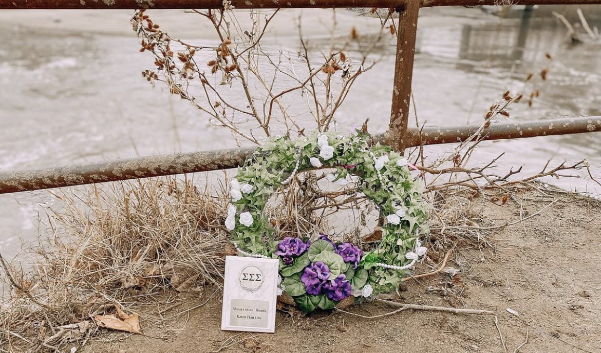

Karen Hawkins Memorial Week
The members of Sigma Sigma Sigma, Alpha Epsilon, along with alumni, hold a memorial week each spring in remembrance of their sister Karen Hawkins.The events of the week are planned to spread awreness of sexual assult and bring the community together. This year's event schedule follows:
Monday 3/21: Case Presentation by Randy Strong
